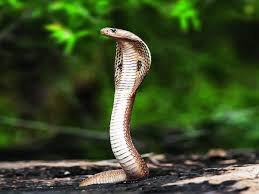
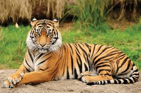

cat
.jpeg)
The cat (Felis catus), commonly referred to as the domestic cat or house cat, is a small domesticated carnivorous mammal. It is the only domesticated species of the family Felidae. Recent advances in archaeology and genetics have shown that the domestication of the cat occurred in the Near East around 7500 BC. It is commonly kept as a house pet and farm cat, but also ranges freely as a feral cat avoiding human contact. It is valued by humans for companionship and its ability to kill vermin. Its retractable claws are adapted to killing small prey like mice and rats. It has a strong, flexible body, quick reflexes, and sharp teeth, and its night vision and sense of smell are well developed. It is a social species, but a solitary hunter and a crepuscular predator. Cat communication includes vocalizations like meowing, purring, trilling, hissing, growling, and grunting as well as cat body language. It can hear sounds too faint or too high in frequency for human ears, such as those made by small mammals. It secretes and perceives pheromones.
dog
.jpeg)
The dog (Canis familiaris or Canis lupus familiaris) is a domesticated descendant of the wolf. Also called the domestic dog, it was domesticated from an extinct population of Pleistocene wolves over 14,000 years ago. The dog was the first species to be domesticated by humans. Experts estimate that hunter-gatherers domesticated dogs more than 15,000 years ago, which was before the development of agriculture. Due to their long association with humans, dogs have expanded to a large number of domestic individuals and gained the ability to thrive on a starch-rich diet that would be inadequate for other canids.
rabbit
.jpeg)
Rabbits are small mammals in the family Leporidae (which also includes the hares), which is in the order Lagomorpha (which also includes pikas). The European rabbit, Oryctolagus cuniculus is the ancestor of the world's hundreds of breeds[1] of domestic rabbit. Sylvilagus includes 13 wild rabbit species, among them the seven types of cottontail. The European rabbit, which has been introduced on every continent except Antarctica, is familiar throughout the world as a wild prey animal, a domesticated form of livestock and a pet. With its widespread effect on ecologies and cultures, in many areas of the world, the rabbit is a part of daily life – as food, clothing, a companion, and a source of artistic inspiration.
snake

Snakes are elongated, limbless reptiles of the suborder Serpentes (/sɜːrˈpɛntiːz/).[2] Like all other squamates, snakes are ectothermic, amniote vertebrates covered in overlapping scales. Many species of snakes have skulls with several more joints than their lizard ancestors, enabling them to swallow prey much larger than their heads (cranial kinesis). To accommodate their narrow bodies, snakes' paired organs (such as kidneys) appear one in front of the other instead of side by side, and most have only one functional lung. Some species retain a pelvic girdle with a pair of vestigial claws on either side of the cloaca. Lizards have independently evolved elongate bodies without limbs or with greatly reduced limbs at least twenty-five times via convergent evolution, leading to many lineages of legless lizards.[3] These resemble snakes, but several common groups of legless lizards have eyelids and external ears, which snakes lack, although this rule is not universal (see Amphisbaenia, Dibamidae, and Pygopodidae).
elephant

Elephants are the largest living land animals. Three living species are currently recognised: the African bush elephant (Loxodonta africana), the African forest elephant (L. cyclotis), and the Asian elephant (Elephas maximus). They are the only surviving members of the family Elephantidae and the order Proboscidea; extinct relatives include mammoths and mastodons. Distinctive features of elephants include a long proboscis called a trunk, tusks, large ear flaps, pillar-like legs, and tough but sensitive grey skin. The trunk is prehensile, bringing food and water to the mouth and grasping objects. Tusks, which are derived from the incisor teeth, serve both as weapons and as tools for moving objects and digging. The large ear flaps assist in maintaining a constant body temperature as well as in communication. African elephants have larger ears and concave backs, whereas Asian elephants have smaller ears and convex or level backs.
lion

The lion (Panthera leo) is a large cat of the genus Panthera, native to Africa and India. It has a muscular, broad-chested body; a short, rounded head; round ears; and a hairy tuft at the end of its tail. It is sexually dimorphic; adult male lions are larger than females and have a prominent mane. It is a social species, forming groups called prides. A lion's pride consists of a few adult males, related females, and cubs. Groups of female lions usually hunt together, preying mostly on large ungulates. The lion is an apex and keystone predator; although some lions scavenge when opportunities occur and have been known to hunt humans, lions typically do not actively seek out and prey on humans.
tiger

The tiger (Panthera tigris) is a member of the genus Panthera and the largest living cat species native to Asia. It has a powerful, muscular body with a large head and paws, a long tail and orange fur with black, mostly vertical stripes. It is traditionally classified into nine recent subspecies, though some recognise only two subspecies, mainland Asian tigers and the island tigers of the Sunda Islands.